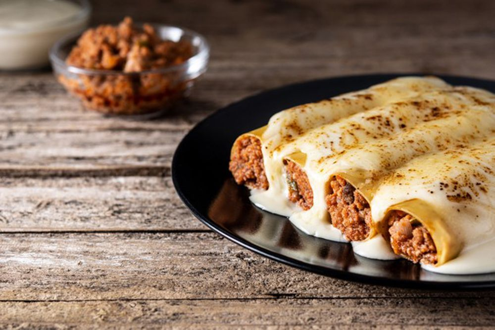

Els canelons de carn són un plat tradicional que forma part de la gastronomia catalana,
i són especialment apreciats durant les festes de Nadal i Sant Esteve. Aquest plat es prepara a base de pasta
farcida amb carn de rostit, que es cobrix amb una delicada beixamel i es gratina al forn fins aconseguir una
textura daurada i cruixent. Tot i que és un àpat típicament festiu, la seva saborosa combinació d'ingredients
fa que sigui una opció popular en qualsevol època de l'any, perfecta per a compartir en família o entre amics.

Canelons de carn
Ingredients
Aquesta recepta es per un total de 2 persones, on els ingredients són els següents:
Per al farciment:
6 làmines de canelons
250 g de carn de vedella (o mixta, vedella i porc)
½ ceba, picada finament
1 dent d’all, picat
½ pastanaga, picada finament
50 g de tomàquet fregit o tomàquet natural triturat
50 g de pernil salat (opcional), picat
½ got de vi blanc (opcional)
Sal i pebre al gust
Oli d’oliva verge extra
Per a la salsa beixamel:
25 g de mantega
25 g de farina
375 ml de llet
Sal, pebre i nou moscada al gust
Per gratinar:
Formatge ratllat (al gust)
Instruccions
Prepara les làmines de canelons segons les instruccions del paquet.
Per al farciment, sofregeix la ceba, l’all i la pastanaga en una paella amb oli. Afegeix-hi la carn i daura-la. Incorpora el tomàquet, el vi blanc i salpebra al gust. Cuina uns 15-20 minuts.
Per a la salsa beixamel, fon la mantega, afegeix-hi la farina i remena. Incorpora la llet a poc a poc fins que espesseixi. Condimenta amb sal, pebre i nou moscada.
Omple les làmines de canelons amb el farciment i col·loca-les en una safata per forn. Cobreix amb la salsa beixamel i formatge ratllat.
Enforna a 180 °C durant 15-20 minuts fins que el formatge estigui daurat.